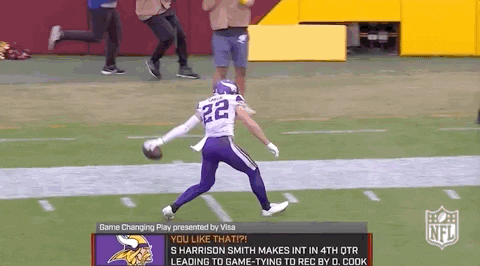

Happy Thanksgiving fellas, hope you all have a great week, watch all the football and eat too much food! I’m thankful for you all! (I know this GIF is not from last week, but Vikes get the big win over the Bills and their celebrations are perfect.)
The first playoff preview is here! This really seems like the make-it-or-break-it week!
Waiver Wire Wizard: Chris saved up all year and spent this week, not a bad time to do it with the fight in the middle getting very intense. Keenan Allen $16, Nick Folk $4, Vanilla Vick $7, Greg Dulcich $3. (I bid on three of these players so fuck you!)
Matchup of the Week: There’s a lot of great matchups this week, so I gotta keep my eyes on the bottom. The Unpaid Bills (3-7) go on the road even though they are supposed to be at home, facing the BROWNS Fantasy (2-8, and another team name from Kris that I don’t understand lol).
We should consider an opposite-of-home-field advantage for the playoffs where the 10th seed starts down a few points. I don’t like this for the championship run, but I think if you finish last in the regular season you should have a greater chance of being Slutler. Anyway, let’s dive in!
Power Rankings - Week Eleven
Playoff Preview
1. PJ (8-2)
God damn, I missed my shot. PJ gets another W making eight straight. Pretty impressive.
What could go wrong? Deebo and Kittle become unpredictable as the tallet is spread in SF. Henry’s wheels finally fall off down the stretch.
I think there’s probably some scenario where PJ misses the playoffs, but the probability is probably somewhere around .1%, same with this next guy…
2. Pangy (8-2)
Pangy’s sitting pretty at a quieter than PJ 8-2. Lock him in the playoffs in his first year in the league, after a scare against Kris last week.
What could go wrong? Mixon only scores one touchdown the rest of the way, and Damien Harris reclaims the starting role in New England, while St. Brown gets hurt again.
In the hunt
3. Seif (6-4)
Matt remains in the driver’s seat as the only 6-4 team, and the top scorer in the league. Huge win over Chris last week in the battle for third place, sending Chris to 5-5.
What could go wrong? Seif drops his last three in tough matchups with Andy, PJ, and Jake (maybe not a tough matchup?), missing the playoffs after a great start.
4. Joel (5-5)
Going Chalk here so far with the top four, but Joe’s team is the most solid at the 5-5 logjam. However, dun dun dun, Joel is welcomed to TE Hell this week with Goedert going down.
What could go wrong? Did I mention Tight End Hell?
5. Chris (5-5)
I’ve been liking what this guy’s been doing, but he runs into a tough spot this week against PJ, coming in with a projected 109 and starting Zeke - I could be wrong but that’s a scary start coming off of that knee injury which I think they’ve really downplayed.
What could go wrong? Keenan Allen pulls his hamstring. Fournette loses is starting spot. Nick Folk doesn’t score 20 points every week.
6. Andy (5-5)
Three straight L’s. Getting Patterson back is nice, but talk about a Dr. Jeckyl and Mr. Hyde with his 18 and 3-point performances in back-to-back weeks. Has Tyler Allgeier taken over that backfield?
What could go right? Herbert and Williams come on strong helping Andy run the table to lock up the 3rd playoff spot.
7. Tony (4-6)
Tony squeaks out a win with only 105 AND starting Garoppolo. That’s fucking skill.
What could go right? Andrews is TE1 the rest of the way. Toney and Tony find love in a hopeless place (WR for the Chiefs).
8. Jake (4-6)
Missed my shot against the King, fucking TE kills me again, while the Raiders spot me a zero. I never roster Raiders and deserve this. Started this week with only four skill players healthy or not on a bye.
What could go right? Njoku solidifies TE for me finally, while Swift returns to his RB1 status, and Etienne runs away with the ROY (yeah, I know he can’t win it technically.)
In the hunt, for the perfect Slutler outfit
9. Neil (3-7)
Neil wastes a boom week for Gabe Davis, partnering it with a very strange one-reception game from AJ Brown - hope his ankle’s okay.
What could go right? Aiming for the 5-6 matchup, Kyle Pitts surges in the second half, while Saquon remains healthy and wins the rushing title.
💩 Kris (2-8)
Kris has spent nearly the whole year in this spot and is getting pretty cozy down here.
What could go right? Hollywood Brown is good and Kris finishes the year at #9.
Good luck to everyone besides Joel! Stay thankful! 🦃 - 🐍
Gentlemen, it is better to have died a small boy than to fumble the football.” ~ John Heisman